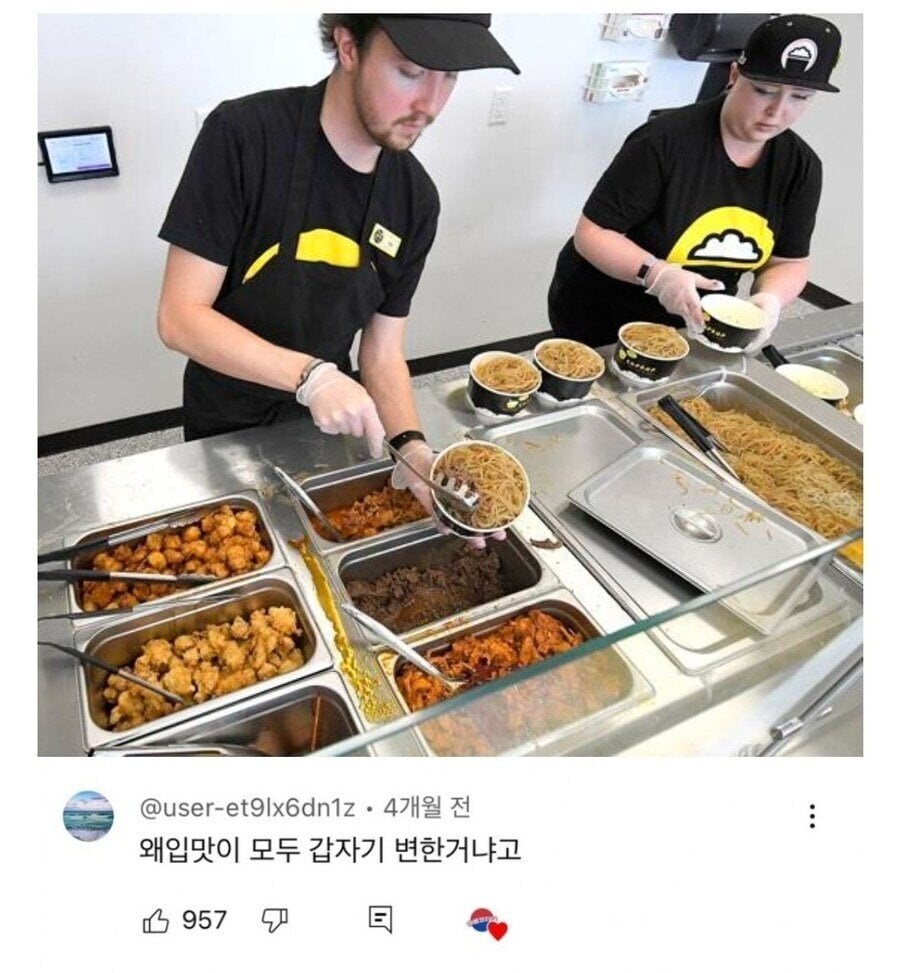
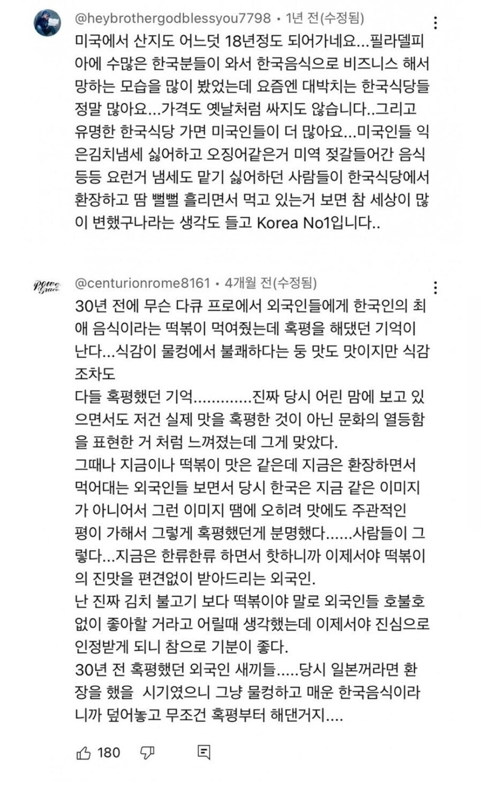

이런 정보를 먹어버렸네요!


이런 정보를 먹어버렸네요!
빨간생강이 김치 역할일줄 알았는데 ㅅㅂ 헛구역질만 나오그라 나한테 고수같은 포지션이라 그거 빼달라늨거 단어 후딱 외웠음
베니쇼가 ㅋㅋㅋ한국 생강초절임이랑 다르게 쓴맛이랑 짠맛이 대다수라 좀 힘들었다 ㅋㅋㅋㅋ
지금은 소량 있으면 오히려 맛있음
김치 밀지말라고 ㅈㄹ해서가 남바원 아닐가
옛날에 나 호주에서 초등학교 다닐때는 ㅋㅋㅋ 떡 식감 이상하다고 비누 쳐먹냐고 하던놈들이 떡볶이 먹방 하면서 먹는거보면 진짜 어이가 없다
시발럼들 젤리는 존내 쳐먹을거 아녀
ㄹㅇ
내가 다른 한식들은 몰라도 떡 식감은 싫다 말하는걸 눈 앞에서 몇 명을 봤는데
떡도 팔림 ㅋㅋㅋㅋ
개미알밥도 동남아라 그렇지 미슐랭에서도 사용하는 개미... 중금속 나왔던데
개미알밥 그거 되게 고급음식이라던데
비빔밥에 날달걀 넣기도 했음?
식스타임비빔밥엔 들어간거 같은데
일본도 똑같았음
1950년대 도쿄올림픽 여는 시점에 해외고위층들 다 불러서 억지로 스시 먹이고
고급화존나 해서 장인이니 미식이니 포장하는데
해외 반응은 날생선주먹밥 미개하게 맨손으로 만드네 였음
분명 1970년 전까진 미개한 음식인데 소수가 먹고 여행가면 편하게 코풀리는 동네였음
근디 1980년부터 일본 문화가 터져나오면서
스시가 프랑스 미식가들에게 극찬받고
극동에 미식을 이해하는 멋진 나 같은 칼럼 실리더니 전부 다 먹으면서 맛있다고 하기 시작함
어느 나라나 이미지와 문화가 중요한듯
많이들 먹는 중식이나 동남아음싯 맛있다고는 하지만
고급음식으로 소비하진 않는거 보면
참 신기해
태국음식은 그래도 미슐랭같은데 들어가고 파인다이닝에서 많이 받아들여져서 이제 문에 한발 걸친 느낌이긴함. 포장이랑 인식이 중요하긴하지
태국 음식은 일단 존맛이야.
인식의 차이인가봐...문화를 바탕으로 한
한 삼사십년 뒤면 장인이 만든 최고급 짜조 이런게 있을지도
90년대 미드 코미디 보면 스시? 어떻게 날 것을 먹어 으웩 하는 묘사가 종종 나옴.
00년대부터는 투자은행가 및 사회 상류층들이 스시집에서 회식하는 모습으로 나옴 ㅋㅋㅋ
BTS한테 절해야돼. 게임 매출 어쩌구 해도 파급력이 다른데.
문화 파급력이 대단하긴 해 ㅋㅋ
근데 개미알밥이 가능하겠나ㅋㅋㅋㅋ
동남아 음식 인니, 태국, 말레이시아 맛있는거 존나 많은데
응엥꾸뿌억뜨엉뚜앙딱 음식을 누가 쳐먹음ㅋㅋㅋㅋ
개드립에 인니에서 오래 살았는데 인니 음식 처먹을 거 좆도 없다고 절절이 분노하던 게이 있지 않냐
https://www.dogdrip.net/698315491
이거군
나도 그 글보고 너무 편견이 심한거 같아서 댓글달았는데, 케바케임. 인니요리문화도 진짜 어마어마하게 많은데 안 알려졌을 뿐이야. 본토 민족도 50개나 되고, 중국영향도 받고, 페라나칸 문화에 300년 지배한 네덜란드 식문화 등등 진짜 다양해. 나도 거기 제법 살았고 온갖 믿기 힘든 일(폭탄테러 직관,노동쟁의로 사람 맞아죽는거 직관, 한국인 공장장이 직원 6명인가 임신시켜서 공장 뒤집어진거, 한국인 관리자가 여직원 임신시켜서 시골에서 여직원 일가친척들이 책임지라고 관광버스타고 공장 쳐들어온 거 직관 등등....)많이 겪었는데 그래도 모르는거 진짜 많다.
이미 10년도 더 전부터 파인다이닝 씬에서 영향력이 큰 노마에서 개미를 썼던 것을 보면 사실 재료 자체의 거부감은 깔끔하고 연구를 하면 뛰어넘을 수 있는 듯. 물론 파인다이닝이 실험적 식재료를 쓰는 것과 대중적으로 받아들여지는 것이랑은 간극이 크긴 하지
문화의 힘
근데 ㅅㅂ 왜 미개한 베트남 쌀국수는 왜 비싼돈받고 팔아먹냐
그냥 잔치국수마냥 4천원 처받으면 될거같은데
이거 제일 유명한 대표사례가 1968년에 중국음식 증후군이잖음 ㅋㅋㅋ
자기네들 음식엔 MSG 존나 쓰는데 중국음식에 들어간 MSG때문에 아프다고 억까한거
이래서 양놈들 음식으로 잘난체 하는거 보면 웃김
한류를 즐기는 나를 즐긴다
한식이 안퍼지는개 훨씬 낫지
김 수출많이되면 우리는 비싼거 먹어야한다고
이거 그거아니냐
'뭔가 철학이 보이기 시작했어요'
황교익이 한식을 세계화 하려면
외국인한테 김치 갖고가서 먹이지말고
국력을 키우라고 했는데
무작정 멍청하게 음식부터 들이민게 아닌 미리 문화와 예술로 먼저 다가간뒤에 천천히 흡수하게하는게 옳았던거지
비빔밥 불고기 김치 일단 잡솨봐가아니라 기생충에서 짜파게티봤지?로 간거지
정보 맛있제?
저땐 한식, Korea가 힙하지 않아서
마케팅 방향을 건강으로 잡고 밀었으니까 사실 건강하지 않다고 털린거고
지금은 힙하니까 뭔 개밥을 주든 No one gives a shit~
이제 외국인들 한국음식 먹는다고 호들갑떨때도 지났지
진짜 딱 그말 생각남
유명해지니 그외의 것은 딱히 문제가 안되는…
방콕 북한식당갔을때 본 충격적인 모습을 보면 그런것도 아님
걍 그냥 한식좋아청년도 많음
외국인들이 맨밥에 김치시켜서 먹고있던 그 기괴한 모습을 잊을수없음
순혈김치맨인 나조차도 맨밥김치는 진짜 못먹겠던데
내가 08년부터 해외살았는데.. 그땐 신라면 끓이면 진짜 옆방 애들이 욕했음... 떡은 진짜 개쌍욕하던.. 그런 기억이 나네 ㅋㅋ
아.. 난 10년에 경험함. 진짜.. 온집안에 냄새나서 민망해갖고 한 5년정도는 라면 안먹은듯..
문화에 대한 흥미를 먼저 불러일으키고 미디어에서 매력적인 인물,스토리에
따라오는 매개체로 자연스럽게 인지하는 소프트 파워전략을 밀어야되는데
이름만 들어본 나라의 처음보는음식을 억지로 츄라이츄라이 밀어붙이니까
몇백억을 쓰든 음식 그자체에 대해서 평가가 박할수밖에
이렇게 보면 진짜 세상(인생 포함) 앞길 어떻게 될지 모르는거 같아
이런 글 보면 항상 겸손하게 살아야 한다는 말이 생각남
아무리 인도문화가 발달하고 그래도 인도 길거리음식은 못먹겠다
호텔이나 전문점 비싼데서 파는거 먹방은 존나 감탄하면서 먹던데 그건 먹어보고싶긴함
솔직히 좆까고 떡볶이 미는거 자체가 개병신같은 짓이지
불고기, 갈비, 육전, 비빔밥 글로벌마케팅할게 차고 넘치는데 떡볶이는 니미ㅋㅋ
예전에는 저기 아시아땅의 옐로몽키가 먹는 이국의 음식이었는데
정보도 정보인데
서구권 젊은층들이 아시아권 음식에 거부감이 덜해졌다거나 그런걸지도 모르지
한 10년 전 까지만 해도 참기름 냄새가 스컹크 방귀같다고 개 지랄 염병하다가
케데헌에서 김밥먹는거 보고 따라 만들면서 참기름 바르고 이게 개 사기템이다 어쩌구 ㅋㅋ
전반적으로는 다 인정인데 떡볶이는 아직 호불호가 강함. 근데 떡볶이란 단어가 유명해서 섹드립 쳐주면 겁나 좋아함 ㅋㅋ 물론 여친한테만 써라
이게 나도 중, 고등학교때 일본드라마를 보면서
제일 먹어보고 싶었던게 규동이였음
드라마에서 간단하게 그리고 든든하게 먹는 장면이 많았어서
그리고 일본여행 가서 처음 먹은 음식은 규동이였다
특별한 맛은 아니 였지만 내가 이걸 드디어 먹어보는구나 자체가 더 컸음
결국 문화가 익숙해져야함